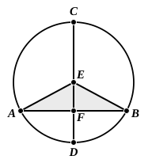
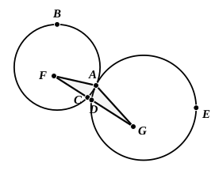
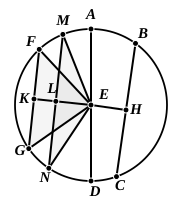
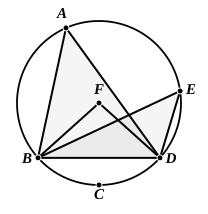
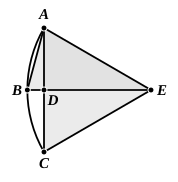
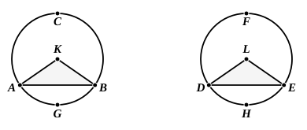
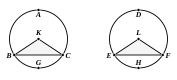
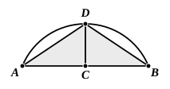
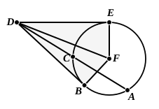

BOOK III. PROPOSITIONS.¶
Proposition III.1
To find the centre of a given circle.
Proposition III.2
If on the circumference of a circle two points be taken at random, the straight line joining the points will fall within the circle.

Proposition III.3
If in a circle a straight line through the centre bisect a straight line not through the centre, it also cuts it at right angles; and if it cut it at right angles, it also bisects it.
Proposition III.4
If in a circle two straight lines cut one another which are not through the centre, they do not bisect one another.
Proposition III.5
If two circles cut one another, they will not have the same centre.
Proposition III.6
If two circles touch one another, they will not have the same centre.
Proposition III.7
If on the diameter of a circle a point be taken which is not the centre of the circle, and from the point straight lines fall upon the circle, that will be greatest on which the centre is, the remainder of the same diameter will be least, and of the rest the nearer to the straight line through the centre is always greater than the more remote, and only two equal straight lines will fall from the point on the circle, one on each side of the least straight line.
Proposition III.8
If a point be taken outside a circle and from the point straight lines be drawn through to the circle, one of which is through the centre and the others are drawn at random, then, of the straight lines which fall on the concave circumference, that through the centre is greatest, while of the rest
Proposition III.9
If a point be taken within a circle, and more than two equal straight lines fall from the point on the circle, the point taken is the centre of the circle.
Proposition III.10
A circle does not cut a circle at more points than two.
Proposition III.11
If two circles touch one another internally, and their centres be taken, the straight line joining their centres, if it be also produced, will fall on the point of contact of the circles.

Proposition III.12
If two circles touch one another externally, the straight line joining their centres will pass through the point of contact.
Proposition III.13
A circle does not touch a circle at more points than one, whether it touch it internally or externally.
Proposition III.14
In a circle equal straight lines are equally distant from the centre, and those which are equally distant from the centre are equal to one another.

Proposition III.15
Of straight lines in a circle the diameter is greatest, and of the rest the nearer to the centre is always greater than the more remote.
Proposition III.16
The straight line drawn at right angles to the diameter of a circle from its extremity will fall outside the circle, and into the space between the straight line and the circumference another straight line cannot be interposed; further the angle of the semicircle is greater, and the remaining angle less, than any acute rectilineal angle.
Proposition III.17
From a given point to draw a straight line touching a given circle.
Proposition III.18
If a straight line touch a circle, and a straight line be joined from the centre to the point of contact, the straight line so joined will be perpendicular to the tangent.
Proposition III.19
If a straight line touch a circle, and from the point of contact a straight line be drawn at right angles to the tangent, the centre of the circle will be on the straight line so drawn.
Proposition III.20
In a circle the angle at the centre is double of the angle at the circumference, when the angles have the same circumference as base.

Proposition III.21
In a circle the angles in the same segment are equal to one another.
Proposition III.22
The opposite angles of quadrilaterals in circles are equal to two right angles.
Proposition III.23
On the same straight line there cannot be constructed two similar and unequal segments of circles on the same side.
Proposition III.24
Similar segments of circles on equal straight lines are equal to one another.

Proposition III.25
Given a segment of a circle, to describe the complete circle of which it is a segment.
Proposition III.26
In equal circles equal angles stand on equal circumferences, whether they stand at the centres or at the circumferences.
Proposition III.27
In equal circles angles standing on equal circumferences are equal to one another, whether they stand at the centres or at the circumferences.

Proposition III.28
In equal circles equal straight lines cut off equal circumferences, the greater equal to the greater and the less to the less.

Proposition III.29
In equal circles equal circumferences are subtended by equal straight lines.

Proposition III.30
To bisect a given circumference.
Proposition III.31
In a circle the angle in the semicircle is right, that in a greater segment less than a right angle, and that in a less segment greater than a right angle; and further the angle of the greater segment is greater than a right angle, and the angle of the less segment less than a right angle.
Proposition III.32
If a straight line touch a circle, and from the point of contact there be drawn across, in the circle, a straight line cutting the circle, the angles which it makes with the tangent will be equal to the angles in the alternate segments of the circle.
Proposition III.33
On a given straight line to describe a segment of a circle admitting an angle equal to a given rectilineal angle.
Proposition III.34
From a given circle to cut off a segment admitting an angle equal to a given rectilineal angle.
Proposition III.35
If in a circle two straight lines cut one another, the rectangle contained by the segments of the one is equal to the rectangle contained by the segments of the other.
Proposition III.36
If a point be taken outside a circle and from it there fall on the circle two straight lines, and if one of them cut the circle and the other touch it, the rectangle contained by the whole of the straight line which cuts the circle and the straight

Proposition III.37
If a point be taken outside a circle and from the point there fall on the circle two straight lines, if one of them cut the circle, and the other fall on it, and if further the rectangle contained by the whole of the straight line which cuts